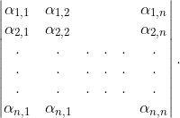

| Choisissez votre langue ! | Choose your language ! |
Définition
définition
Soit A =(αi,j) 1 ≤ i,j ≤ n une matrice carrée d'ordre n à coefficients dans K. On pose: \[Det(A)=\sum_{\sigma \in S_{n}}^{}sgn(\sigma )\alpha _{1,\sigma (1)}\alpha _{2,\sigma (2)}...\alpha _{n,\sigma (n)}\] et on appelle ce nombre le
'déterminant'
de la matrice A.
Notations
Le déterminant d'une matrice se note avec des barres verticales, comme ceci:
Exemples
Voici une appliquette générant des matrices carrées d'ordre 2, 3 ou 4 à coefficients dans un corps que vous pouvez choisir.Leur déterminant s'affiche à chaque nouveau choix.
Definition
definition
Let A =(αi,j) 1 ≤ i,j ≤ n be a square matrix of order n with coefficients in K. We set: \[Det(A)=\sum_{\sigma \in S_{n}}^{}sgn(\sigma )\alpha _{1,\sigma (1)}\alpha _{2,\sigma (2)}...\alpha _{n,\sigma (n)}\] and we call this number the
'determinant'
of the matrix A.
Notations
The determinant of a matrix is noted with vertical bars, like this:Examples
Here is an applet generating square matrices of order 2, 3 or 4 with coefficients in a field that you can choose.Their determinant is displayed with every new choice.
|
Matrice A
Matrix A
|
|||||||
| ℝ | |
| ℚ | |
| ℤ/5ℤ | |
| ℂ |
Ordre de la matrice carrée A :
Order of square matrix A :
Principales propriétés
Le lien avec les déterminants d'un système de vecteurs est immédiat.théorème
Le déterminant d'une matrice est le de Kn du système de n vecteurs formés par ses n lignes. Le déterminant d'une matrice est donc une fonction de ses lignes. En conséquence on ne change pas le déterminant d'une matrice en ajoutant à une ligne une combinaison linéaire des autres lignes. Si on permute les lignes d'une matrice, le déterminant est multiplié par la signature de la permutation.
théorème
Det(A) ≠ 0 est un critère des lignes de A.
théorème
Le déterminant d'une matrice est égal au déterminant de sa . Det(tA)=Det(A)
démonstration
Dans le développement du déterminant de A le terme pour lequel les indices colonnes sont 1, 2, ... ,n dans cet ordre est: sgn(σ-1)ασ-1 (1),1 ...ασ-1(n),nCe qui fait que le déterminant de A peut aussi bien être donné par la formule: \[Det(A)=\sum_{\sigma \in S_{n}}^{}sgn(\sigma ^{-1})\alpha _{\sigma ^{-1}(1),1}...\alpha _{\sigma ^{-1}(n),n}\] Mais comme sgn(σ)=sgn(σ-1) et que l'application σ → σ-1 est une bijection de Sn sur lui-même. La formule proposée s'en suit immédiatement.
théorème
Le déterminant d'une matrice est le déterminant par rapport à la base canonique de Kn du système de n vecteurs formés par ses n colonnes. Le déterminant d'une matrice est donc une fonction multilinéaire alternée de ses colonnes. En conséquence on ne change pas le déterminant d'une matrice en ajoutant à une colonne une des autres colonnes. Si on permute les colonnes d'une matrice, le déterminant est multiplié par la signature de la permutation.
théorème
Det(A) ≠ 0 est un critère d'indépendance linéaire des colonnes de A.
théorème
Det(A) ≠ 0 ⇔ A inversible
théorème
Le déterminant d'une est égal au produit de ses éléments diagonaux. En particulier, le déterminant de la matrice unité est égal à 1.
démonstration
Dans le développement en somme tous les termes sont nuls sauf un correspondant à σ = Id, et ce terme est égal au produit de tous les élements diagonaux.Déterminant d'un produit
Le résultat qui suit est capital:théorème
L'application A → Det(A) de M(n,K) dans K est un homomorphisme de (M(n,K),×) dans (K,×), c'est à dire que: Det(AB)=Det(A)Det(B)
démonstration
On désigne par D le déterminant par rapport à la base canonique de Kn. Soit f l'endomorphisme de Kn → Kn associé à la matrice A. Soit B la base canonique de Kn . Considérons l'application Df : (x1,...,xn) → Det((f(x1), ... ,f(xn)),B).Df est manifestement une forme n-linéaire alternée. Donc Df=kD en vertu d'un théorème précédent. En appliquant cela à la base canonique de Kn soit (a1,...,an), il vient k=Df(a1,...,an).
Donc Df(x1,...,xn)=Df(a1,...,an)D(x1,...,xn).
On voit de suite sur la définition que:
Df(a1,...,an)=Det(A) donc:
D(f(x1),...,f(xn))=Det(A)D(x1,...,xn).
Par conséquent si g est associé à B comme f à A.
D(g(x1),...,g(xn))=Det(B)D(x1,...,xn).
Posons maintenant h=f og, on a alors:
D(h(x1),...,h(xn))=Det(AB)D(x1,...,xn).
Mais aussi:
D(h(x1),...,h(xn))=D(f(g(x1)),...,f(g(xn)))= Det(A)D(f(x1),...,f(xn))=Det(A)Det(B)D(x1,...,xn) d'où l'égalité cherchée.
théorème
Pour toute matrice A
Det(A-1)=Det(A)-1.
Le coin de Python
Voici un programme qui calcule le déterminant d'une matrice en utilisant la définition.
Le coin de Julia
Même chose avec Julia 1.6
Main properties
The link with the determinants of a system of vectors is immediate.theorem
The determinant of a matrix is the of Kn of the system of n vectors formed by its n rows. The determinant of a matrix is therefore an function of its rows. Consequently, we do not change the determinant of a matrix by adding to a row a linear combination of the others rows. If we permute the rows of a matrix, the determinant is multiplied by the signature of the permutation.
theorem
Det(A) ≠ 0 is a criterion of for the rows of A.
theorem
The determinant of a matrix is equal to the determinant of its . Det(AT)=Det(A)
proof
In the expansion of the determinant of A the term for which the column indices are 1, 2, ... ,n in this order is: sgn(σ-1)ασ-1(1),1 ...ασ-1(n),nThis means that the determinant of A can also be given by the formula: \[Det(A)=\sum_{\sigma \in S_{n}}^{}sgn(\sigma ^{-1})\alpha _{\sigma ^{-1}(1),1}...\alpha _{\sigma ^{-1}(n),n}\] But since sgn(σ)=sgn(σ-1) and the map σ → σ-1is a bijection of Sn on itself. The proposed formula follows immediately.
theorem
The determinant of a matrix is the determinant with respect to the canonical basis of Kn of the system of n vectors formed by its n columns. The determinant of a matrix is therefore an alternating multilinear function of its columns. Consequently we do not change the determinant of a matrix by adding to a column a of the other columns. If we permute the columns of a matrix, the determinant is multiplied by the signature of the permutation.
theorem
Det(A) ≠ 0 is a criterion linear independence columns of A.
theorem
Det(A) ≠ 0 ⇔ A invertible
theorem
The determinant of a is equal to the product of its diagonal elements. In particular, the determinant of the unit matrix is equal to 1.
proof
In expansion as a sum all the terms are zero except one corresponding to σ = Id, and this term is equal to the product of all the diagonal elements.Determinant of a product
The following result is crucial:theorem
The map A → Det(A) from M(n,K) to K is a homomorphism from (M(n,K),×) to (K,×), i.e.: Det(AB)=Det(A)Det(B)
proof
We denote by D the determinant with respect to the canonical basis of Kn. Let f be the endomorphism of Kn → Kn associated with the matrix A. Let B be the canonical basis of Kn . Consider the map Df : (x1,...,xn) → Det((f(x1), ... ,f(xn)),B).Df is obviously an alternating n-linear form. So Df=kD by virtue of a previous theorem. Applying this to the canonical basis of Kn let (a1,...,an), it comes k=Df(a1,...,an).
So Df(x1,...,xn)=Df(a1,...,an)D(x1,...,xn).
We see immediately from the definition that:
Df(a1,...,an)=Det(A) so:
D(f(x1),...,f(xn))=Det(A)D(x1,...,xn).
Therefore if g is associated with B as f with A.
D(g(x1),...,g(xn))=Det(B)D(x1,...,xn).
Let us now set h=f og, we then have:
D(h(x1),...,h(xn))=Det(AB)D(x1,...,xn).
But also:
D(h(x1),...,h(xn))=D(f(g(x1)),...,f(g(xn)))= Det(A)D( f(x1),...,f(xn))=Det(A)Det(B)D(x1,...,xn) hence the desired equality.
theorem
For any matrix A Det(A-1)=Det(A)-1.
Python's Corner
Here is a program that calculates the determinant of a matrix using the definition.
Julia's corner
Same with Julia 1.6
|
Création Gilles Dubois - licence CC-BY-SA
Created by Gilles Dubois - licence CC-BY-SA
|
Septembre 2023
September 2023
|
Version mobile Jquery
Mobile Jquery version
|
|